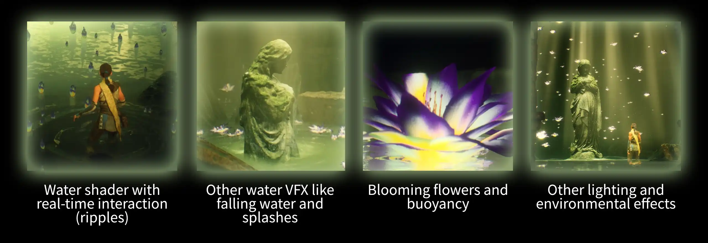

2025/11
Unreal Engine, 3Ds Max, Liquigen, Substance Designer
◆ I did not use generative AI.
What I did 私はエフェクト・シェーダーを制作し、カメラワークを工夫しました。背景を多く変更しました。キャラクタアニメーションも調整しました。
- インタラクティブな水面シェーダー・エフェクト
- 浮力・咲く花のエフェクト
- 花のモデル・テクスチャ
- ライティング・背景のエフェクト
- カメラワーク
Assets used 石像モデル・背景・キャラクター・キャラクターアニメーションは他のアーティストのアッセットです：
- Windwalker Echo by Epic Games on Fab: https://fab.com/s/9190e00e008a
- SciFi Dark Fantasy Environment — 'The Orb' by Ryan Honey on Fab: https://fab.com/s/e1d3b9846614
- Saint Mary sculpture at the cemetery in Lublin by CiechWoj on Fab: https://fab.com/s/3111597bccaf
- MoCap Online Free Animation Pack by MoCap Online on Fab: https://fab.com/s/70f5ca18b360
- 263 Rokoko motion capture assets by Rokoko on their website: https://www.rokoko.com/mocap/free-mocap-assets

Sunken Statue
For this project, I created game-ready VFX for a cinematic sequence. It includes:

Water Shader
I challenged myself to create a water shader without using Unreal Engine's Single Layer Water Shading Model. Instead, I made it “from scratch”, starting from the Translucent Shading Model.
The real-time water interaction works like this:
１．Capturing the movement of the player (or other actors). I do that via blueprint components which send
information to Niagara Grid 2D system. Then, in Niagara, I translate that information into a “Locations”
texture using HLSL.
２．Using the “Locations” texture, I use a convolution kernel to simulate ripples on the surface of the water.
I also use the texture to create a foam mask. I write all of this information into a “Simulation” texture.
３．I can now use the “Simulation” texture inside the water shader to change normals, refraction, opacity, color, etc.
Water VFX
The water falling VFX is made up of a few different layers:
１．Water dripping normals on the statue material
２．Water scrolling shader on a mesh that wraps around the statue
３．Water falling flipbooks and single droplets placed strategically
４．Water splashes on the water surface
The activity of the emitters and the opacity of the effect changes based on the distance to the water
surface. This way it is only visible where the statue just emerged.
Blooming Flowers
For the blooming flower effect, I focused on simplicity for an optimized effect that can be used on hundreds of flowers. That is why the animation is driven by a single RotateAboutAxis node, with some math magic to make the movement look rounded and believable.
I hand-painted the flower texture to get the right magical feeling. I assembled the flower asset in 3DS Max.
To get simple buoyancy working for the flowers, it is as simple as reading the normals derived from the “Simulation” Texture, as they have the directional information needed to push the flowers.